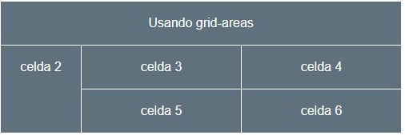

Atras
Ejercicio 4
Trata de construir esta disposición con celdas unidas entre si para formar ese
sidebar con el texto celda2 y la cabecera cn el texto celda 1. Usa el layout tipo grid.
La primera columna tiene 100px de ancho y las restantes 150px cada una. En el
código HTML las celdas con el texto celda xx son los elementos escritos como
bloques div. La alineación del texto al centro es un estilo CSS con el color o el fondo.
La linea entre celdas es un gap de 1px. Intenta logarar el mismo aspecto que la
figura.

Usando grid-areas
2
3
4
5
6